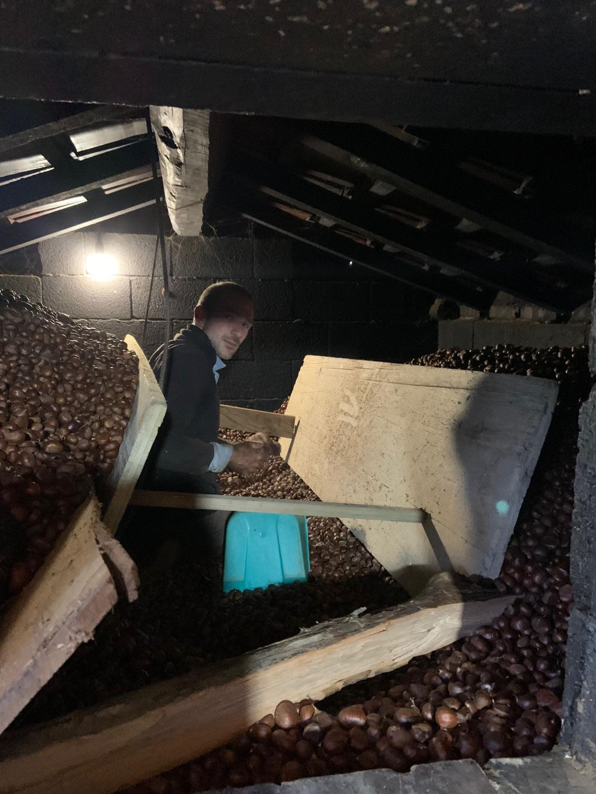
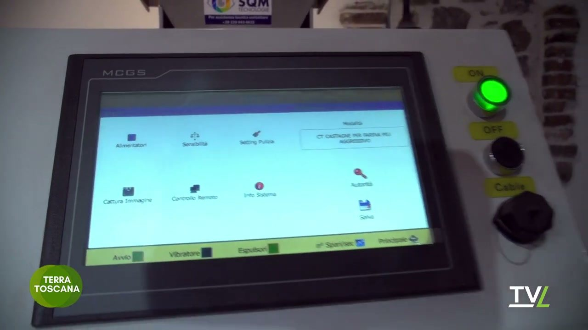
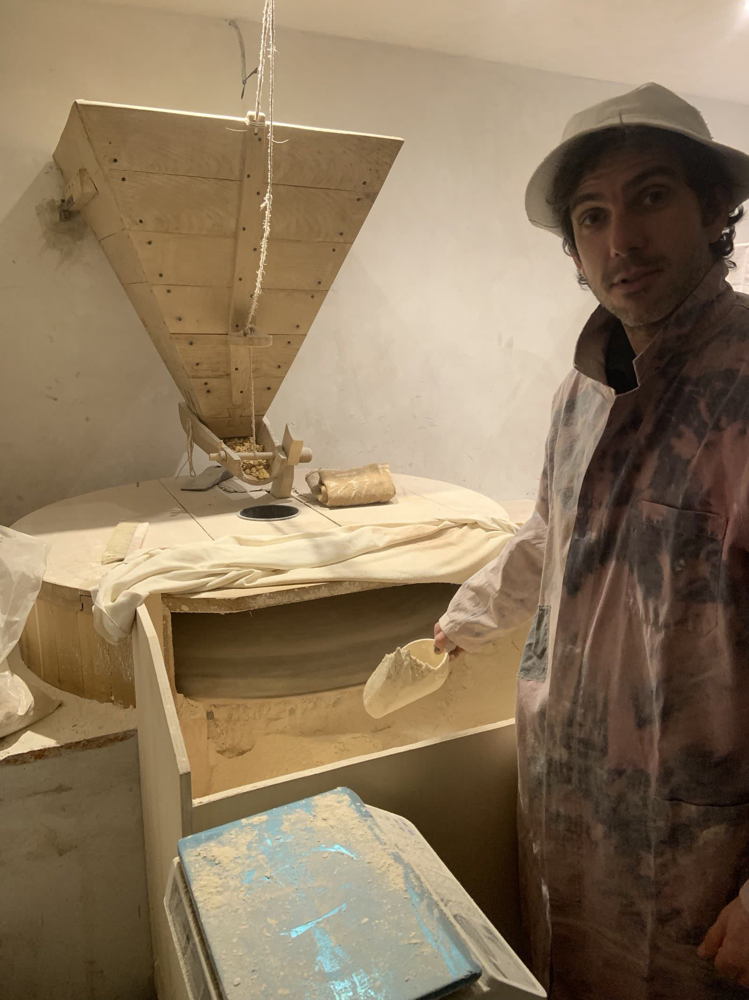
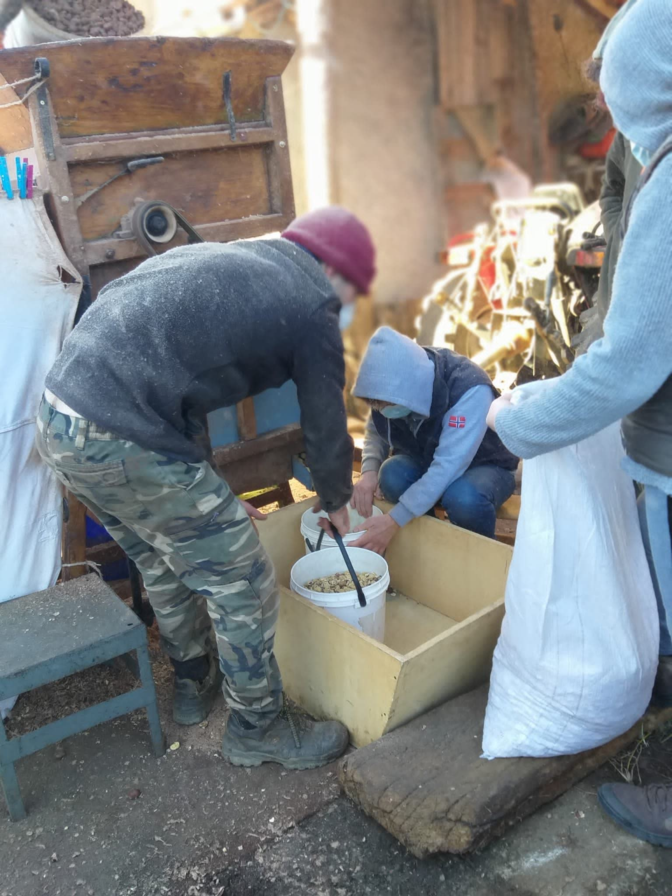

Processi lenti,
come natura comanda.
Non è solo farina. È il risultato di quaranta giorni di fumo, il battito di un mulino ad acqua e il silenzio dei boschi dell'Appennino.

Dal bosco al metato
Il metato è una piccola struttura in pietra a due piani. Qui, le castagne vengono distese su un graticcio di legno, mentre al piano terra arde un fuoco lento di legna di castagno e bucce.
Quaranta giorni di pazienza. Il fumo avvolge ogni frutto, asciugandolo lentamente senza cuocerlo. È un'alchimia di calore costante e fumo aromatico che dona alla farina quel retrogusto lievemente tostato, unico nel suo genere.
Il rituale del fuoco
"La fiamma non deve mai toccare il graticcio. È il calore dell'anima del bosco che trasforma il frutto."
La selezione ottica
Tra l’essiccazione e la macina, ogni castagna passa attraverso una selezionatrice ottica tecnologicamente avanzata. Telecamere ad alta risoluzione e algoritmi di analisi scartano in tempo reale ogni frutto difettoso, scuro, attaccato dal verme o non perfettamente essiccato.
È il punto di incontro tra la tradizione contadina e la tecnologia: il sapere antico del metato, e l’occhio digitale che garantisce a chi compra solo le castagne migliori. Niente surprese nella busta, solo il meglio del raccolto.

Solo il frutto perfetto arriva al mulino.

Certificazione
Macinatura a freddo garantita sotto i 30°C per preservare gli enzimi.
La macina a pietra
Dopo la selezione ottica, le castagne vengono portate al mulino. Le grandi macine in pietra francese, restaurate a mano, ruotano lentamente come da tradizione.
A differenza dei mulini industriali, la pietra non scalda la farina. La grana rimane irregolare, "viva", carica di tutti gli oli e i profumi che il calore della macinatura meccanica distruggerebbe.
"Si entra bianchi di farina, si esce con un prodotto introvabile nei supermercati."
Dettagli che fanno la differenza

Setacciatura Manuale
Ogni sacchetto viene controllato a mano per garantire una purezza assoluta.
100% Naturale
Nessun fertilizzante, solo l'humus del sottobosco.
Selezione ottica
Selezionatrice ottica tecnologicamente avanzata: scarta ogni frutto difettoso prima della macina.
Packaging Etico
Sacco in carta riciclata e cucitura in spago naturale.